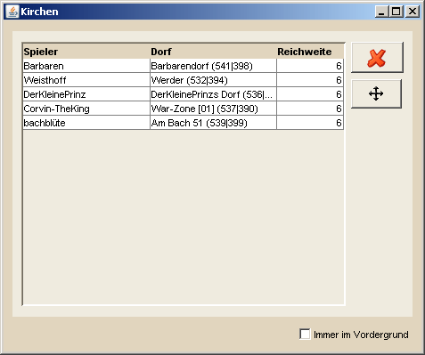

Kirchenübersicht |
|
| Achtung: Die Kirchenübersicht ist nur auf Servern aktiviert, auf denen Kirchen aktiviert sind. In ihr werden Kirchen angezeigt, die über das entsprechende Werkzeug im Hauptmenü auf der Hauptkarte platziert wurden. Als Farbe des Kirchenradius wird dabei automatisch die Farbe gewählt, unter welcher der Besitzer des Dorfes in der Markierungsübersicht geführt ist. Ist keine Markierung gesetzt, wird die Standardmarkierung, die in den DS Workbench Einstellungen festgelegt ist, verwendet. Kirchenradien von Spielerdörfern sind immer gelb. | |
|  | |
Die Kirchenübersicht ist verfügbar, wenn man einen Servern ausgewählt hat, der das Kirchensystem unterstützt. Hier werden Dörfern angezeigt in denen über das entsprechende Werkzeug eine Kirche platziert wurde. Im Menü auf der rechten Seite findet man einige Funktionen:
|
|
Shortcut-Funktionen |
|
|